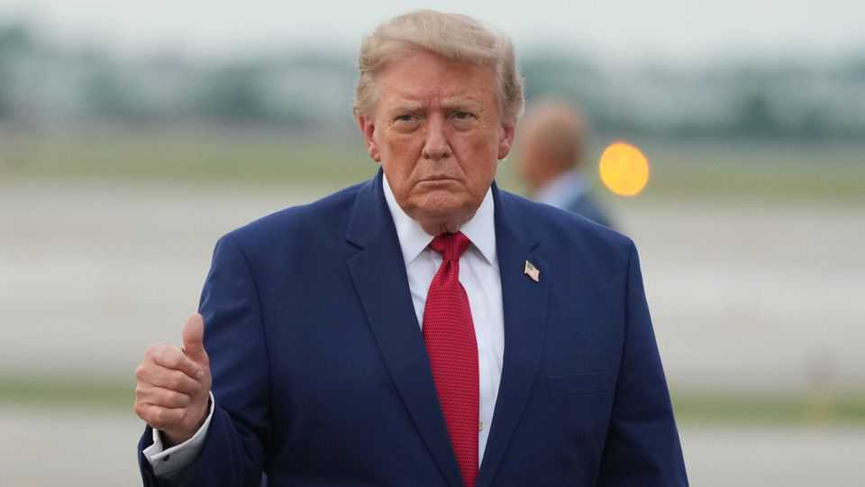

A bill to punish Putin gives too much power to Donald Trump
Walloping the global trading system is no way to help Ukraine

Aug 13th 2026
Vladimir Putin will not end his war on Ukraine until he believes the costs of fighting on exceed the costs of stopping. The costs to him, that is—Russia’s president cares nothing for the Ukrainian lives he is ruining, and precious little for all the Russian blood and treasure he is wasting in pursuit of a warped idea of personal glory. So Ukraine and its backers must somehow convince him that he will never win, and that continuing to try will only weaken him.
On August 7th America’s Senate passed a bill designed to send that message. “The Lindsey O. Graham Sanctioning Russia and Iran Act”, named after a senator who was a champion of Ukraine until he died in July, directs America’s president to take more forceful action against Russia. As its title suggests, it includes new sanctions on Mr Putin and other Russian bigwigs, as well as on Russian energy projects and financial institutions. The aim is to punish Russia for as long as it fails to make peace with Ukraine and to signal that America will not abandon Mr Putin’s courageous victims.
The bill, which senators approved by a hefty 86 votes to 11, was a rare example of bipartisanship in a rancorously divided nation. Unfortunately, its current form is deeply flawed.
The main worry is that it gives America’s president new powers to impose tariffs. Levies of up to 100% may be slapped on the top five importers of Russian energy and on any country that helps Russia evade sanctions. The president may waive tariffs if he deems it “in the national interests of the United States” or adjust them if a country has taken “significant steps” to increase or decrease the import or transfer of Russian oil or gas. That is a lot of discretion for Congress to give to anyone, let alone to Donald Trump.
The reasoning went something like this. Sanctions do not seem to have improved Mr Putin’s behaviour. It is tricky to block Russian oil exports, given the large, hard-to-police “shadow fleet” of tankers that ship the stuff illicitly. So the late Senator Graham and Richard Blumenthal, a Democrat who co-sponsored the bill, included a new weapon: tariffs on countries that buy Russian hydrocarbons.
The danger is that Mr Trump will interpret the “national interest” clause creatively. He has form. The Supreme Court in February struck down his previous claim that declaring an economic “emergency”—in this case America’s trade deficit—allowed him to impose tariffs as he saw fit. This fanciful legal theory had enabled Mr Trump to threaten to hurt any country that displeased him—a handy way to extract concessions for America, and for himself. Since the justices thwarted this power grab, Mr Trump has been trying to reimpose tariffs under a patchwork of other legal justifications, with mixed success.
The new bill could restore to the president a chunk of the power the Supreme Court rightly took away. That would be bad for American consumers, who might face higher prices. It would be worse for the global trading system, which would once again be at the mercy of the “tariff man”, as Mr Trump has dubbed himself. As drafted, the bill raises the spectre of a new trade war with India, unless Mr Trump sensibly chooses not to wage one. The legislation must now get through the House of Representatives, which should remove the parts about tariffs.
Meanwhile, there are other, cannier steps that Washington could take to help Ukraine. One is practical. The country is struggling to fend off deadly volleys of Russian missiles without American-made Patriot interceptors to blast them from the sky. America has few to spare, since so many have been used up during Mr Trump’s war on Iran. But Washington could agree to license their production to Ukraine, allowing Ukrainians to beef up their own defences.
The other way to help Ukraine is less concrete. Mr Putin needs to be persuaded that America and Europe will never let Ukraine lose. Given Mr Trump’s wildly inconsistent stances on the war and apparent desire to be liked by Mr Putin, that is hard. But Congress, which will be around long after Mr Trump has left the White House, can send useful signals. The larger the majorities it can muster for supporting Ukraine, the sooner Mr Putin will realise that it is time to cut his losses. ■